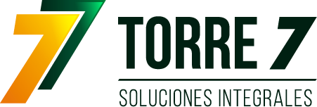

Nivel I
Basic
Para organizaciones que comienzan a fortalecer su gestión.
Orientación inicial y acceso a recursos para identificar prioridades y organizar acciones de mejora.
- Diagnóstico inicial
- Recursos prácticos
- Espacios grupales de orientación

Solicita asesoríaTorre 7 Soluciones Integrales S.A.S.
Quiénes somos
Somos una empresa orientada al diseño y desarrollo de soluciones integrales para fortalecer las organizaciones, con especial atención a las entidades sin ánimo de lucro (ESAL) y las organizaciones sociales.
Integramos la gestión de proyectos, el fortalecimiento organizacional, la formación, la investigación aplicada y la innovación para contribuir al desarrollo de capacidades, la mejora de la gestión y la sostenibilidad de las iniciativas organizacionales.
Entendemos que cada organización tiene una realidad particular, capacidades por potenciar y desafíos que requieren soluciones pertinentes. Por eso, nuestra propuesta parte de comprender las necesidades de cada cliente y construir alternativas acordes con sus objetivos, recursos y contexto.
Transformamos propósitos en soluciones sostenibles mediante la gestión de proyectos, el fortalecimiento organizacional, la formación, la investigación aplicada y la innovación. Acompañamos a organizaciones, empresas, entidades sociales e instituciones en el desarrollo de sus capacidades, la generación de conocimiento y la implementación de iniciativas que contribuyan al desarrollo sostenible, la transformación de los territorios y la generación de valor e impacto social.
Para el año 2035, Torre 7 Soluciones Integrales será una empresa reconocida en Colombia y con proyección internacional por su capacidad para integrar la gestión de proyectos, el fortalecimiento organizacional, la formación, la investigación aplicada y la innovación, generando soluciones pertinentes, alianzas estratégicas e impactos sostenibles que contribuyan al desarrollo de las organizaciones y los territorios.
Nuestro compromiso
Aportar conocimiento, herramientas y acompañamiento para que las organizaciones fortalezcan su gestión y desarrollen su potencial de transformación social.
Las cuatro líneas estratégicas
Línea principal · Portafolio de servicios
La línea central de nuestra propuesta de valor. Acompañamos a organizaciones sociales y ESAL en el fortalecimiento de su gestión, la planificación de su desarrollo y la estructuración de iniciativas que contribuyan al cumplimiento de su propósito.

Identificación de capacidades, necesidades y oportunidades de mejora.
Entregables posiblesDiagnóstico, matriz de oportunidades y recomendaciones priorizadas.
Acompañamiento en la definición de objetivos, prioridades, estrategias e indicadores.
Entregables posiblesPlan estratégico, plan de acción, matriz de indicadores y esquema de seguimiento.
Transformación de necesidades e ideas en proyectos con objetivos, actividades, recursos, resultados e indicadores.
Entregables posiblesPerfil de proyecto, marco lógico, presupuesto y cronograma, según el alcance acordado.
Identificación y análisis de oportunidades de financiación y cooperación pertinentes para la organización.
Entregables posiblesMatriz de oportunidades, criterios de elegibilidad y hoja de ruta para la postulación.
Este servicio no implica garantizar financiación ni aprobación.
Diseño de herramientas para monitorear actividades, resultados y avances hacia los objetivos.
Entregables posiblesIndicadores, instrumentos de seguimiento, matrices de resultados e informes.
Acompañamiento para identificar oportunidades de fortalecimiento y mejorar las condiciones de continuidad de los procesos organizacionales.
Entregables posiblesDiagnóstico de sostenibilidad, plan de mejora y recomendaciones de gestión.
Los entregables definitivos se ajustan al diagnóstico y al alcance acordado con cada organización.
Membresías Torre 7 Proyecta
Elige el nivel de acompañamiento que tu organización necesita hoy y avanza en su fortalecimiento de manera continua.
Nivel I
Para organizaciones que comienzan a fortalecer su gestión.
Orientación inicial y acceso a recursos para identificar prioridades y organizar acciones de mejora.
Nivel II Acompañamiento periódico
Para organizaciones que necesitan acompañamiento periódico.
Apoyo para desarrollar una ruta de fortalecimiento y avanzar en acciones priorizadas.
Nivel III
Para organizaciones que requieren un acompañamiento más integral.
Acompañamiento estratégico para fortalecer la gestión y hacer seguimiento a iniciativas prioritarias.
Líneas complementarias

Formación y desarrollo de capacidades
Modalidades: presencial · virtual · combinada.

Innovación y transformación organizacional
Soluciones ajustadas a los recursos y necesidades de cada organización.

Investigación aplicada y generación de conocimiento
Cómo trabajamos
Escuchamos a la organización, identificamos su necesidad y delimitamos el alcance del trabajo.
Definimos objetivos, metodología, actividades, entregables y criterios de seguimiento.
Ejecutamos las actividades acordadas y construimos las soluciones con el cliente.
Revisamos los resultados, documentamos aprendizajes y proponemos acciones de continuidad cuando corresponda.
Encuentra tu ruta
Responde dos preguntas y te sugerimos la línea de servicio que mejor se ajusta a tu organización.
Red de ESAL
Un espacio para visibilizar e impulsar a las entidades sin ánimo de lucro y organizaciones sociales que hacen parte de nuestra red.
No encontramos organizaciones con ese criterio.
Trabajemos juntos
Te acompañamos a identificar oportunidades, organizar tus prioridades y desarrollar iniciativas acordes con el propósito de tu organización.
Cuéntanos qué necesita tu organización y construiremos una propuesta de acompañamiento ajustada a tus objetivos, recursos y contexto.